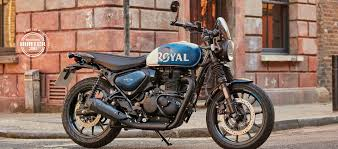
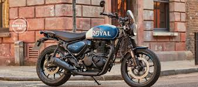
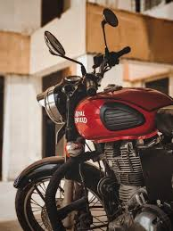
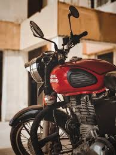

🏍️ Introduction to Royal Enfield.
Royal Enfield is the oldest motorcycle brand in continuous production in the world.
It was originally a British company, but today it is an Indian-owned brand under Eicher Motors Ltd.
Royal Enfield is famous for its classic design, powerful performance, and that royal, vintage feel that riders love.
🕰️ History Founded in 1893 in Redditch, England, as “Enfield Manufacturing Company Ltd.” The first motorcycle was launched in 1901, under the name “Royal Enfield.” In 1955, Royal Enfield partnered with Madras Motors in India to build bikes locally. The British plant later closed, but the Indian factory continued, keeping the brand alive — and thriving. ⚙️ Key Features
Classic Retro Design — Inspired by old British army motorcycles. Powerful Engines — Ranges from 350cc to 650cc. Iconic “Thump” Sound — The deep exhaust note known as the “Bullet sound.” Perfect for Long Rides — Excellent for touring and adventure riding. Strong Build Quality — Heavy, durable metal body for long-term reliability.🛵 Popular Models Model Name Engine Highlights Bullet 350 346cc Symbol of heritage and tradition Classic 350 349cc Retro look with modern touches Meteor 350 349cc Comfortable cruiser bike Himalayan 411 411cc Built for adventure and off-roading Interceptor 650 648cc Twin-cylinder highway performer Continental GT 650 648cc Sporty café racer style 🌍 Global Popularity
Royal Enfield is popular across India, Bangladesh, Nepal, Europe, and the USA. It’s not just a motorcycle — it’s an emotion among riders. For long-distance road trips like the Leh-Ladakh route, it’s often the top choice. ⚖️ Advantages & Disadvantages ✅ Advantages: Stylish, royal, and timeless design Great for long rides and highways Strong engine torque and road grip Trusted global brand ❌ Disadvantages: Heavy weight Low fuel efficiency (mileage) Some models have engine vibration issues 


 
